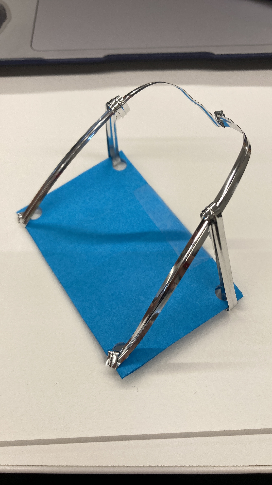
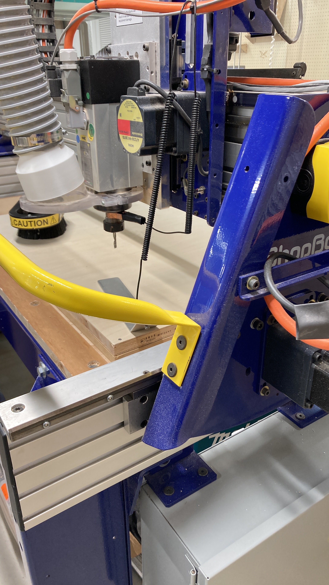
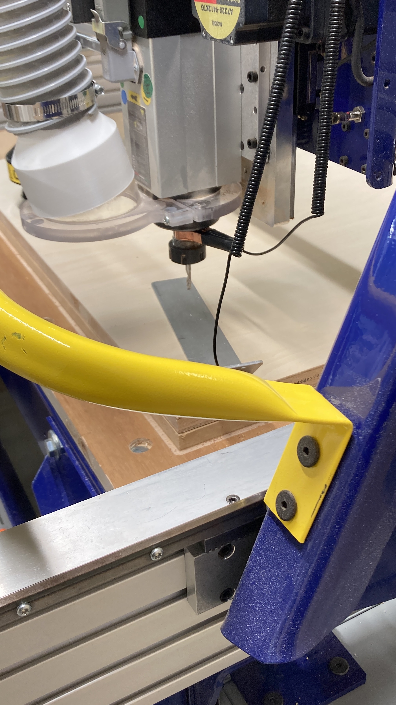

持ち運び机
私たちの班では「持ち運びできる机」を作ることになった。
プロトタイプ

首に下げて使えるものを想像して作った。スケッチはこんな感じ↓
大きめの板が必要だったのでショップボットのCNCを使うことに。先生にやってもらいました。

↑板の厚さを測っている
fusion360で書いてdxfデータにしたもので作る。 
インサイド、アウトサイドに気をつけて作る。
ドリルの太さと寸法の問題があるので、線分に対して